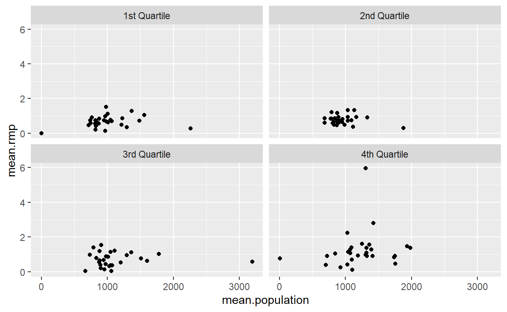
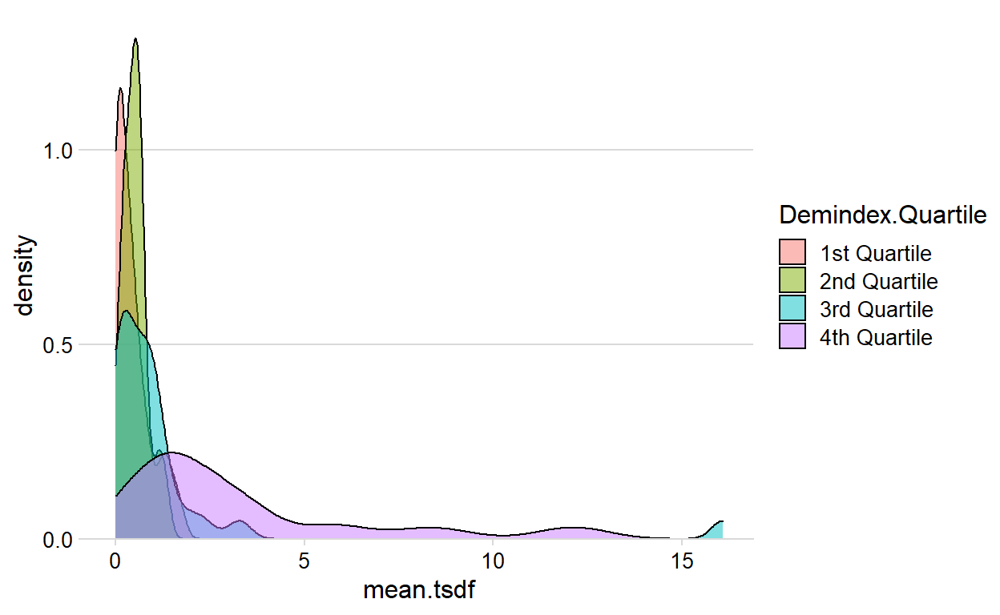
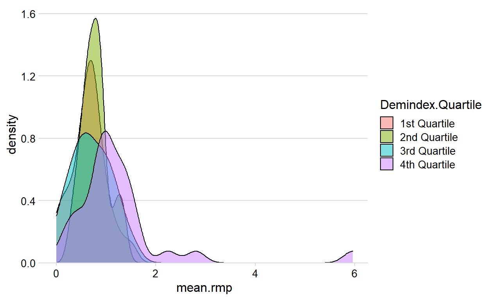
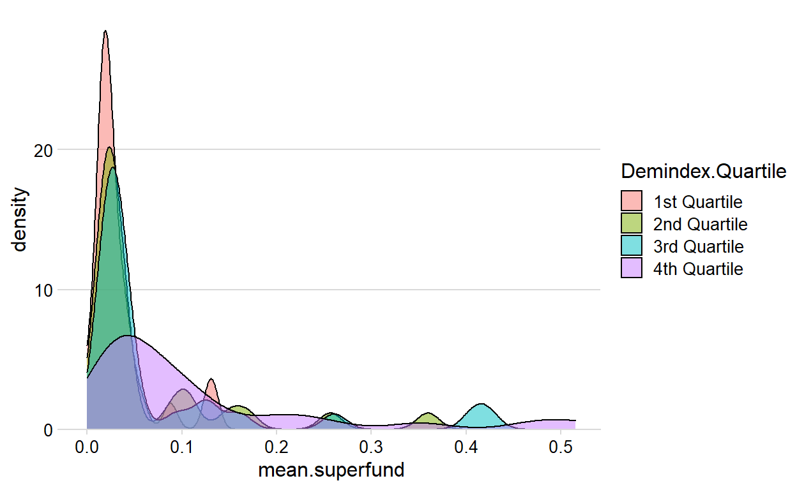

Bivariate Relationships, Modeling, and Functions
ejscreen <- read.delim("../../_data/EJSCREEN_2020_IL.csv", sep = ",", header = TRUE)
ejscreen.tidy <- as_tibble(ejscreen)
Including some interim steps, the result is a new tibble named “ejscreen.clean” containing only the 6 variables I’m working with.
options(scipen = 999)
(ejscreen.clean <- ejscreen.tidy %>%
rename(superfund.area = PNPL,
rmp.area = PRMP,
tsdf.area = PTSDF,
census.region = ID,
population = ACSTOTPOP,
dem.index = VULEOPCT) %>%
select(superfund.area, rmp.area, tsdf.area, census.region, population, dem.index))
# A tibble: 9,691 x 6
superfund.area rmp.area tsdf.area census.region population
<dbl> <dbl> <dbl> <dbl> <int>
1 0.0436 2.79 31.2 170313000000 1964
2 0.0306 1.28 8.24 170312000000 968
3 0.0384 1.88 28.5 170318000000 1371
4 0.0532 4.81 9.31 170313000000 2031
5 0.0305 2.63 7.90 170312000000 576
6 0.0431 2.91 40.4 170313000000 2446
7 0.0398 2.72 28.7 170312000000 1181
8 0.0326 0.872 12.8 170312000000 2223
9 0.0350 2.22 20.9 170318000000 620
10 0.0309 1.17 8.44 170312000000 1026
# ... with 9,681 more rows, and 1 more variable: dem.index <dbl>I summarized and found the mean of the environmental variables- The mean value for superfund.area is 0.09851763, for rmp.area is 1.196261, and for tsdf.area is 4.087846, which helps me to determine where the values begin to indicate levels of risk that are higher or lower than the mean.
I then summarized and found the mean of the demographic variable “dem.index”. The mean value for this variable is 0.3469023, which helps me to determine where the values begin to indicate levels of higher-risk populations within census regions.
I checked how many occurrences there are of the census region codes in this dataset, and can see that the values of the individual census blocks contained in a given census region could potentially be combined into fewer values and summarized.
ejscreen.mean <- ejscreen.clean %>%
group_by(census.region) %>%
summarise(mean.rmp = mean(rmp.area),
mean.superfund = mean(superfund.area),
mean.tsdf = mean(tsdf.area),
mean.demindex = mean(dem.index),
mean.population = mean(population))
ejscreen.mean
# A tibble: 114 x 6
census.region mean.rmp mean.superfund mean.tsdf mean.demindex
<dbl> <dbl> <dbl> <dbl> <dbl>
1 170010000000 0.743 0.103 1.18 0.201
2 170040000000 0.909 0.0521 0.742 0.454
3 170060000000 0.363 0.0423 0.499 0.211
4 170070000000 1.37 0.516 1.22 0.296
5 170100000000 1.21 0.0225 0.0252 0.218
6 170120000000 0.753 0.149 0.219 0.209
7 170140000000 0.136 0.0254 0.0461 0.165
8 170160000000 0.582 0.0359 0.0568 0.179
9 170180000000 1.05 0.0130 0.0345 0.304
10 170190000000 1.28 0.0752 2.23 0.342
# ... with 104 more rows, and 1 more variable: mean.population <dbl>I have made a hypothesis that in census regions that have a higher demographic index (a higher proportion of low-income and minority persons) have a corresponding higher frequency of environmental risk areas in proximity compared to the general population.
This correlation matrix gives an overview of the correlations for all combinations of two variables, rounded to 2 decimals.
census.region mean.rmp mean.superfund mean.tsdf
census.region 1.00 -0.17 -0.03 -0.23
mean.rmp -0.17 1.00 0.15 0.47
mean.superfund -0.03 0.15 1.00 0.11
mean.tsdf -0.23 0.47 0.11 1.00
mean.demindex -0.12 0.51 0.32 0.57
mean.population -0.05 0.18 0.09 0.22
mean.demindex mean.population
census.region -0.12 -0.05
mean.rmp 0.51 0.18
mean.superfund 0.32 0.09
mean.tsdf 0.57 0.22
mean.demindex 1.00 0.11
mean.population 0.11 1.00After analyzing the Pearson correlations, there are some relationships with stronger positive linear relationships than others. Those moderately strong positive correlations (0.51 to 0.7) are:
The weak positive correlations (0.3 to 0.5) are:
H0: ρ=0 (meaning that there is no linear relationship between the two variables)
H1: ρ≠0 (meaning that there is a linear relationship between the two variables)
I used cor.test to determine the p-value to examine the relationships between the ejscreen mean demographic index score for a given census region and the mean number of environmental threats in those areas as measured by the mean count of these sites in the mean.rmp, mean.superfund and mean.tsdf variables.
cor.test(x=ejscreen.mean$mean.demindex, y=ejscreen.mean$mean.tsdf,
alternative = c("two.sided", "less", "greater"),
method = c("pearson"),
exact = NULL, conf.level = 0.95)
Pearson's product-moment correlation
data: ejscreen.mean$mean.demindex and ejscreen.mean$mean.tsdf
t = 7.4178, df = 112, p-value = 0.00000000002458
alternative hypothesis: true correlation is not equal to 0
95 percent confidence interval:
0.4360854 0.6855175
sample estimates:
cor
0.5739666 cor.test(x=ejscreen.mean$mean.demindex, y=ejscreen.mean$mean.rmp,
alternative = c("two.sided", "less", "greater"),
method = c("pearson"),
exact = NULL, conf.level = 0.95)
Pearson's product-moment correlation
data: ejscreen.mean$mean.demindex and ejscreen.mean$mean.rmp
t = 6.3098, df = 112, p-value = 0.000000005751
alternative hypothesis: true correlation is not equal to 0
95 percent confidence interval:
0.3623130 0.6361078
sample estimates:
cor
0.5121039 cor.test(x=ejscreen.mean$mean.demindex, y=ejscreen.mean$mean.superfund,
alternative = c("two.sided", "less", "greater"),
method = c("pearson"),
exact = NULL, conf.level = 0.95)
Pearson's product-moment correlation
data: ejscreen.mean$mean.demindex and ejscreen.mean$mean.superfund
t = 3.5462, df = 112, p-value = 0.0005717
alternative hypothesis: true correlation is not equal to 0
95 percent confidence interval:
0.1421151 0.4739455
sample estimates:
cor
0.3177255 I found another way to look at the p-values of each relationship in my data set without having to run the cor.test for each one using the Hmisc package. This shows each p-value rounded to three decimals.
census.region mean.rmp mean.superfund mean.tsdf
census.region NA 0.078 0.754 0.013
mean.rmp 0.078 NA 0.102 0.000
mean.superfund 0.754 0.102 NA 0.238
mean.tsdf 0.013 0.000 0.238 NA
mean.demindex 0.187 0.000 0.001 0.000
mean.population 0.631 0.054 0.353 0.018
mean.demindex mean.population
census.region 0.187 0.631
mean.rmp 0.000 0.054
mean.superfund 0.001 0.353
mean.tsdf 0.000 0.018
mean.demindex NA 0.229
mean.population 0.229 NAAfter analyzing the matrix, it is clear that we do have some correlations with statistically significant correlations.
P-value ≤ α: The correlation is statistically significant
P-value > α: All other non-categorical relationships
At first review of my initial statistical analysis of my hypothesis, it does seem that there are statistically significant, positive correlations between increasing demographic index ratings and the frequency of all three environmental risk variables I have examined.
Looking further, the strongest relationships are between the demographic index ratings and the frequency of TSDF sites and RMP sites within 5 km of the census region. There is a significant but weaker relationship between the demographic index ratings and the frequency of the Superfund sites within 5 km of the census region.
This could be explained logically by the nature of the environmental risk; Superfund sites are those that have been identified as former polluting sites that have urgent for remediation, which is more likely to be in areas where there are fewer vulnerable and low-income populations and more vocal and high-influence populations demanding urgency to the remediation.
On the other hand, the TSDF sites (toxic storage and disposal facilities) and RMP sites (facilities that emit toxic pollutants that require RMP (risk management plans) on file with the EPA) are those that are actively operating in vulnerable populations.
Demindex.Percentile_00 <- min(ejscreen.mean$mean.demindex)
Demindex.Percentile_25 <- quantile(ejscreen.mean$mean.demindex, 0.25)
Demindex.Percentile_50 <- quantile(ejscreen.mean$mean.demindex, 0.50)
Demindex.Percentile_75 <- quantile(ejscreen.mean$mean.demindex, 0.75)
Demindex.Percentile_100 <- max(ejscreen.mean$mean.demindex)
RB = rbind(Demindex.Percentile_00, Demindex.Percentile_25, Demindex.Percentile_50, Demindex.Percentile_75, Demindex.Percentile_100)
dimnames(RB)[[2]] = "Value"
RB
Value
Demindex.Percentile_00 0.0000000
Demindex.Percentile_25 0.1778061
Demindex.Percentile_50 0.2175840
Demindex.Percentile_75 0.2651559
Demindex.Percentile_100 0.7777778ejscreen.mean$Demindex.Quartile[ejscreen.mean$mean.demindex >= Demindex.Percentile_00 & ejscreen.mean$mean.demindex < Demindex.Percentile_25] = "1st Quartile"
ejscreen.mean$Demindex.Quartile[ejscreen.mean$mean.demindex > Demindex.Percentile_25 & ejscreen.mean$mean.demindex < Demindex.Percentile_50] = "2nd Quartile"
ejscreen.mean$Demindex.Quartile[ejscreen.mean$mean.demindex > Demindex.Percentile_50 & ejscreen.mean$mean.demindex < Demindex.Percentile_75] = "3rd Quartile"
ejscreen.mean$Demindex.Quartile[ejscreen.mean$mean.demindex > Demindex.Percentile_75 & ejscreen.mean$mean.demindex <= Demindex.Percentile_100] = "4th Quartile"
ejscreen.mean
# A tibble: 114 x 7
census.region mean.rmp mean.superfund mean.tsdf mean.demindex
<dbl> <dbl> <dbl> <dbl> <dbl>
1 170010000000 0.743 0.103 1.18 0.201
2 170040000000 0.909 0.0521 0.742 0.454
3 170060000000 0.363 0.0423 0.499 0.211
4 170070000000 1.37 0.516 1.22 0.296
5 170100000000 1.21 0.0225 0.0252 0.218
6 170120000000 0.753 0.149 0.219 0.209
7 170140000000 0.136 0.0254 0.0461 0.165
8 170160000000 0.582 0.0359 0.0568 0.179
9 170180000000 1.05 0.0130 0.0345 0.304
10 170190000000 1.28 0.0752 2.23 0.342
# ... with 104 more rows, and 2 more variables:
# mean.population <dbl>, Demindex.Quartile <chr>I created a faceted scatterplot showing the mean population of each census area on the x axis and the mean frequency of each census area for each environmental risk on the y axis. Each quartile of the demographic index rating is illustrated independently, showing a visual acknowledgement of what the statistical analysis showed.
(ggplot(data = ejscreen.mean) +
geom_point(mapping = aes(x = mean.population, y = mean.tsdf)) +
facet_wrap(~ Demindex.Quartile, nrow = 2))
(ggplot(data = ejscreen.mean) +
geom_point(mapping = aes(x = mean.population, y = mean.superfund)) +
facet_wrap(~ Demindex.Quartile, nrow = 2))
(ggplot(data = ejscreen.mean) +
geom_point(mapping = aes(x = mean.population, y = mean.rmp)) +
facet_wrap(~ Demindex.Quartile, nrow = 2))

I then loaded the package “cowplot” and visualized the Demographic Index Quartiles against each of the environmental riskf actor frequencies.
library(cowplot)
ggplot(ejscreen.mean, aes(mean.tsdf, fill = Demindex.Quartile)) +
geom_density(alpha = 0.5) +
scale_y_continuous(expand = expansion(mult = c(0, 0.05))) +
theme_minimal_hgrid(12)

library(cowplot)
ggplot(ejscreen.mean, aes(mean.rmp, fill = Demindex.Quartile)) +
geom_density(alpha = 0.5) +
scale_y_continuous(expand = expansion(mult = c(0, 0.05))) +
theme_minimal_hgrid(12)

library(cowplot)
ggplot(ejscreen.mean, aes(mean.superfund, fill = Demindex.Quartile)) +
geom_density(alpha = 0.5) +
scale_y_continuous(expand = expansion(mult = c(0, 0.05))) +
theme_minimal_hgrid(12)

United States Environmental Protection Agency (EPA), 2020 version, updated July 1, 2021. EJSCREEN. Retrieved: July 16, 2021 (https://gaftp.epa.gov/EJSCREEN/2020/)